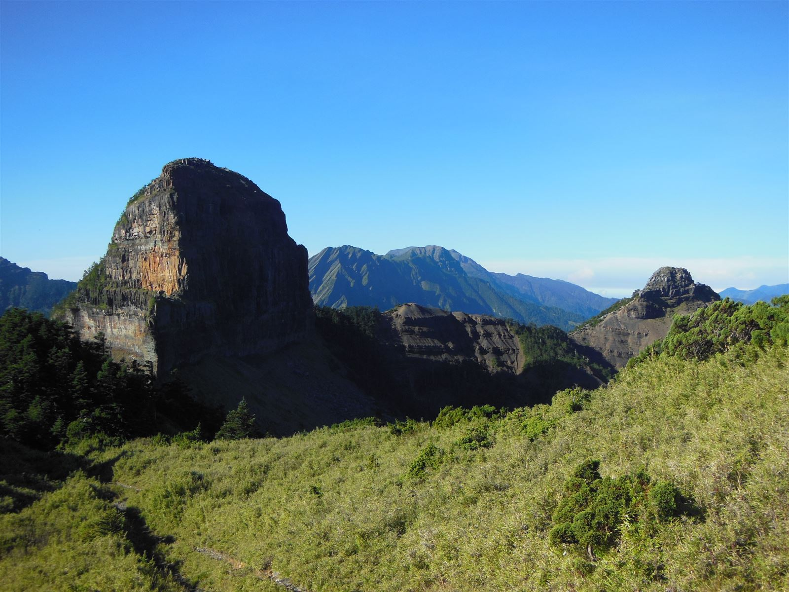

Home
熱門百岳路線
北部
大小霸尖山
南湖群峰
中部
雪山主東
合歡群峰
奇萊南華
南部
玉山主峰
南橫三星
北大武山
東部
嘉明湖步道
天氣預報
裝備清單
官方網站入口
雪霸國家公園
太魯閣國家公園
玉山國家公園
台灣山林悠遊網
雪山主東
雪山主峰 標高: 3886m
雪山東峰 標高: 3201m
合歡群峰
合歡北峰
標高: 3422m
合歡東峰
標高: 3421m
合歡主峰
標高: 3417m
石門山
標高: 3237m
奇萊南華
奇萊南峰
標高: 3358m
南華山
標高: 3184m
嘉明湖步道
向陽山 標高: 3602m
三叉山 標高: 3496m
玉山主峰
玉山主峰 標高: 3952m
北大武山
北大武山 標高: 3092m
南湖群峰
南湖大山
標高: 3742m
南湖東峰
標高: 3632m
南湖北山
標高: 3536m
審馬陣山
標高: 3141m

大小霸尖山
大霸尖山
標高: 3492m
小霸尖山
標高: 3418m
伊澤山
標高: 3297m
加利山
標高: 3112m
南橫三星
塔關山
標高: 3222m
關山嶺山
標高: 3176m
庫哈諾辛山
標高: 3115m